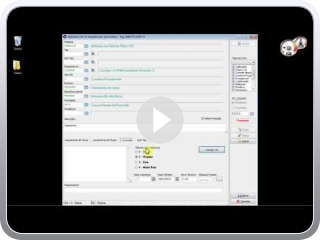Aplicativo SoftOS - Gestão de Ordens de Serviço
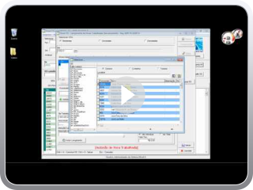SmartOS - Gestão de Ordens de Serviço
Aprovação de Solicitações de Serviço
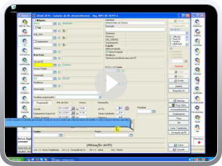Cálculo de mão de obra necessária para a OS
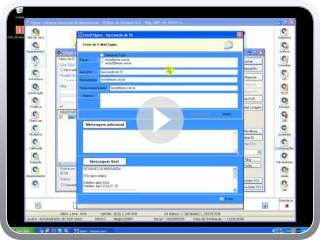Notificações de OS's por e-mail
Lançamento Direto - Filtro de OS por Funcionário
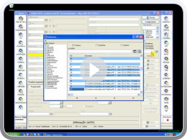Acompanhamento Online de Funcionários
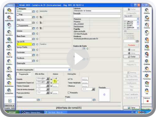Cálculo de tempo de Máquina parada
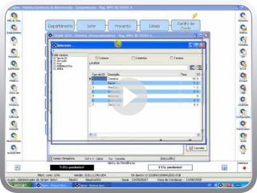Cálculo automatico de prioridade de Ordem de Serviço
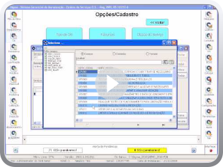Utilizando o Serviço padrão Parte 1
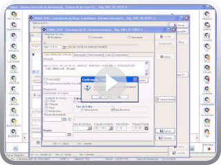Utilizando o Serviço padrão - Parte 2
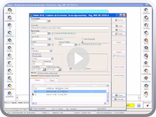Utilizando o Serviço padrão Parte 3
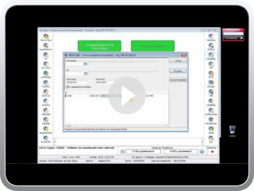Aplicativo Lançamento Direto I
Adding Video to Blog by VideoLightBox.com v2.1